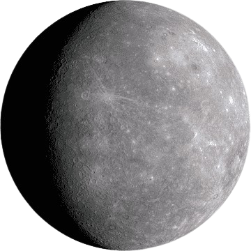
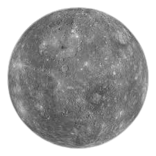

Latest Mercury News
Mercury's Surface Explored
NASA's MESSENGER spacecraft has provided new insights into the surface composition and geological history of Mercury. These findings are reshaping our understanding of the planet.
Read moreSolar Exploration: Mercury's Role
Recent studies highlight Mercury's unique position in solar exploration, offering critical information about the Sun's influence on planetary formation.
Read moreMercury's Atmosphere Studied
Scientists are investigating Mercury's thin atmosphere, which is crucial for understanding how terrestrial planets maintain their atmospheres in harsh environments.
Read more